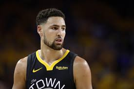
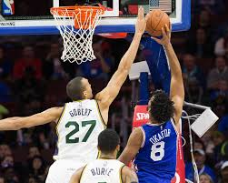

Basketball Terminologies
Point Gaurd (PG)
The primary job of a Point Gaurd is to orchestrate the offence, ensuring that the team is able to achieve a quality shot during a possesion
An Example is Luka Doncic (Dallas #77)

Shooting Gaurd (SG)
The primary job of a Shooting Gaurd is to play off the ball through the team's sytsem and score, and must be swift and mobile enough to defend opposing gaurds.
An Example is Klay ThompsonSmall Forward (SF)
The primary job of a Small Forward is to defend all positions, score off the ball, and often are secondary or tertiary rebounders
An Example is Kevin Durant (Brooklyn #7)Power Forward (PF)
The primary job of a Power Forward is to play near the basket while rebounding, defending taller players and stretching the floor to shoot jumpshots
An Example is Anthony Davis (Lakers #3)

Center (C)
On offense, the Center tries to score on close shots and rebound. But on defense, the center tries to block opponents' shots and rebound their misses
An Example is Rudy Gobert (Jazz #27)
Other Terminologies
Points Per Game (PPG)
The amount of points a player scores a gamePlus/Minus (+/-)
Plus minus measures a player's impact when playing. If they are a net positive, they are benefitial to the team.